Try-试一试¶
1. variable-变量的申明与使用¶
{{: a = "b"}}
<div>
<div name="a {{a}} c 23">hello world</div>
<div>hello world</div>
</div>
效果展示：
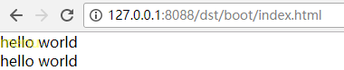{{let a=”b”}}或{{: a=”b”}}都可以申明变量，{{: a.b=”c”}}语法可以用于对已存在变量的值进行修改
2. ComponentNesting-组件嵌套使用¶
<div style = "background-color:red;">
i am grand
<widget w-tag="examples-widget-02_paint_multi-father"></widget>
</div>
或
<div>
i am father
<child$></child$>
</div>
效果展示：
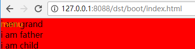用widget标签名，设置w-tag属性值为子组件路径，可以导入子组件的内容，或者直接以子组件的路径作为元素标签名，以短横线作为连接`包名-[包名-…]文件名`，也可以实现子组件的导入。
3. FatherToSon父组件向子组件传值¶
{{% 我是父组件}}
<div>
i am father!
<widget w-tag="组件路径">{"child":"hello child!"}</widget>
</div>
{{% 我是子组件}}
<div>
{{it.child}}
</div>
效果展示：
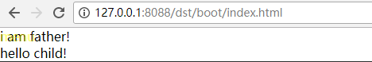在父组件中通过组件闭合标签中使用json对象传递值，在子组件中会把json对象赋给it（即props属性）
组件导入标签命名规则：
<role_show$ style=""></role_show$>表示本目录下的role_show组件，
<role_show$$ style=""> </role_show$$>表示父目录下的role_show组件，
<role_show-zb_show$$ style=""></role_show-zb_show$$>表示父目录下role_show目录下的zb_show组件
<app-base-btn style=""></app-base-btn>表示根目录开始，app/base目录下的btn组件
4. wcss样式应用¶
- tpl
<div w-class="color-red">
i am blue, and top is 100px
</div>
- wcss
.color-red{
background-color:blue;
margin-top:100px;
}
效果展示：
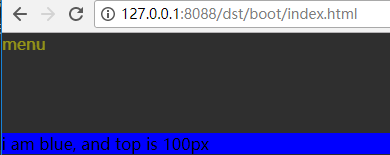在.tpl同目录下建立同名的.wcss文件，此文件为样式表文件，其内的样式经编译后以内联样式的形式嵌入html标签中，内联样式不支持的伪元素伪类等，w-class也无法支持
5. Style-样式继承¶
//child.tpl
<div w-class = "child a">
i am child, i am white
</div>
//father.tpl
<div w-class="father b">
i am father, i am blue
<examples-widget-05_style_inherit-child></examples-widget-05_style_inherit-child>
</div>
//grand.tpl
<div w-class="grand c">
i am grand, i am yellow
<examples-widget-05_style_inherit-father></examples-widget-05_style_inherit-father>
</div>
效果展示：
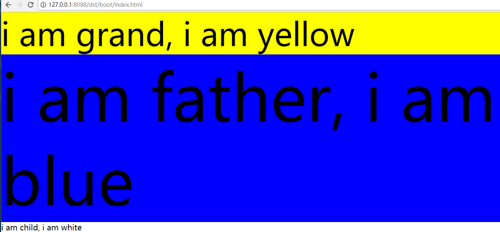- 如果子组件中没有定义该样式，则使用父组件中的样式。
- 如果子组件中有定义该样式，则不使用父组件中的同名样式。
6. It值的传递与使用¶
{{: it = it||"a"}}
<div style = "" w-class = "child {{it}}">
i am child, i am gray
</div>
{{: it = it||"a"}}
<div w-class="father b">
i am father, i am blue
<examples-widget-06_style_multi-child>{{it}}</examples-widget-06_style_multi-child>
</div>
<div w-class="grand c robot">
i am grand, i am yellow
<examples-widget-06_style_multi-father>{{tt}}</examples-widget-06_style_multi-father>
</div>
效果展示：
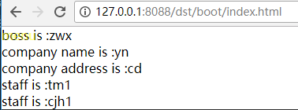- 在标签内使用{{}}可以传递单个变量
- grand中直接传递it值，但是并没有对其设置初值，相当于传递一个null，如果传递其他变量名则会报错undefined。
7. js处理props(it)¶
<div style="background-color: yellow">
<div>
boss is : {{it.boss}}
</div>
<div>
company name is : {{it.cpy.name}}
</div>
<div>
company address is : {{it.cpy.addr}}
</div>
{{for index,staff of it.staff}}
<div>
staff is : {{staff}}
</div>
{{end}}
</div>
import { Widget } from '../../../widget/widget';
export class JSONX extends Widget {
/* tslint:disable:typedef */
public props = {
boss: 'zwx',
cpy: {
addr: 'cd',
name: 'yn'
},
staff: [
'tm1',
'cjh1'
]
};
}
效果展示：
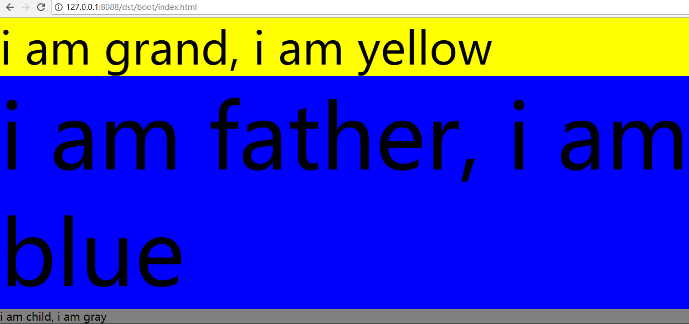在js中给props设置初值，在tpl中直接用it即可使用
8. Event-事件绑定¶
<div on-click="onClick">
click number is : {{it.count}}
</div>
interface Props {
count:number;
}
export class Html extends Widget {
public props:Props;
constructor() {
super();
this.props = {count : 0};
}
public onClick(event:any) {
alert('hey!');
this.props.count++;
this.paint();
}
}
效果展示：
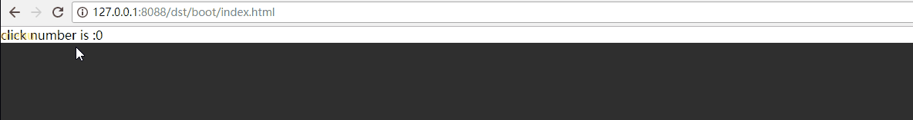- 通过在标签中使用on-click属性来绑定点击事件
- 其他事件同理【on-事件名】实现绑定
- 事件处理函数在ts文件中定义
- 事件处理后要刷新页面需要手动调用this.paint()
9. SonToFather-子组件向父组件传值¶
<div on-click = "childClick">
i am child
</div>
public childClick(event: any) {
alert('childClick');
notify(event.node, 'ev-click', { value: 'tangmin' });
}
<div ev-click = "fatherClick">
<子组件></子组件>
</div>
public fatherClick(event:any) {
alert(`father get it : ${event.value}`);
}
效果展示：
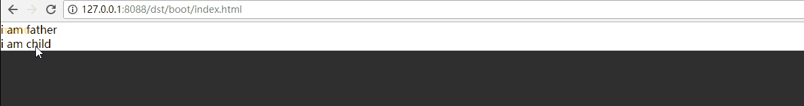子组件的绑定事件中调用notify方法
- event.node：dom节点，比传参数
- ev-click：自定义监听事件名，必须以ev-开头
- {}：需要传递给父节点的参数
父组件绑定监听事件
10. StyleRedraw-样式重绘示例¶
<div w-class="{{it.style}}">
i am yellow, and then red and finally blue;
</div>
export class Clazz extends Widget {
constructor() {
super();
this.props = {
style:'yellow'
};
}
public attach() {
setTimeout(() => {
this.props.style = 'red';
this.paint();
}, 3000);
setTimeout(() => {
this.props.style = 'blue';
this.paint();
}, 6000);
}
}
.yellow{
background-color:yellow;
font-size:20px;
}
.red{
background-color: red;
font-size:40px;
}
.blue{
background-color:blue;
}
效果展示：
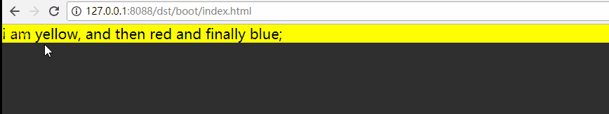- 首先给style赋初始值，通过定时器来改变该变量的值
- 调用this.paint()方法可以进行页面的刷新
- 背景色会yellow-red-blue切换
11. ChangeEvent-绑定事件改变示例¶
<div on-click={{it.clickFunc}}>
点我
</div>
export class EventHtml extends Widget {
public props:Props;
constructor() {
super();
this.props = {
clickFunc:'click1'
};
}
public click1(event:any) {
event.preventDefault();
alert(' i am click 1');
this.props.clickFunc = 'click2';
this.paint();
}
public click2(event:any) {
alert(' i am click 2');
}
}
效果展示：
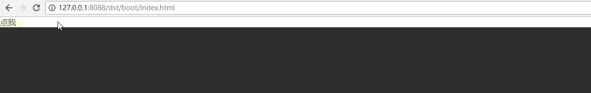- 首先给clickFunc赋初始值，第一次点击事件触发后修改该变量的值
- 调用this.paint()方法刷新页面
- 第二次及之后点击事件触发的方法都是click2
12. ChangeListener-监听事件改变示例¶
<div on-click="clickFunc">
i am child, 点我
</div>
export class Child extends Widget {
constructor() {
super();
this.props = {
};
}
public clickFunc(event: any) {
event.preventDefault();
notify(event.node, 'ev-click', { value: 'tangmin' });
}
}
<div ev-click={{it.clickFunc}}>
i am father
<examples-widget-18_repaint_event_user-child></examples-widget-18_repaint_event_user-child>
</div>
export class Father extends Widget {
public props: Props;
constructor() {
super();
this.props = {
clickFunc: 'click1'
};
}
public click1(event: any) {
alert('i am click1 from father');
this.props.clickFunc = 'click2';
this.paint();
}
public click2(event: any) {
alert('i am click2 from father');
}
}
效果展示：
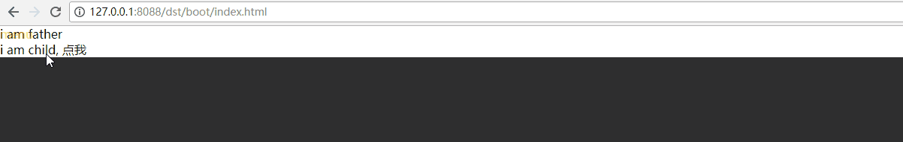- 子组件绑定一个点击事件，触发后冒泡
- 父组件首先给clickFunc参数赋初始值，第一次监听到事件后改变该参数
- 第二次及之后监听事件执行的是click2
13. Element-定时显示或消失元素示例¶
<div>i am father!!!
<examples-widget-20_repaint_child_wgt_add-child1></examples-widget-20_repaint_child_wgt_add-child1>
{{if it.hasChild2}}<examples-widget-20_repaint_child_wgt_add-child2></examples-widget-20_repaint_child_wgt_add-child2>
{{end}}
</div>
export class Father extends Widget {
public props: Props;
constructor() {
super();
this.props = {
hasChild2: false
};
}
public attach() {
setTimeout(() => {
this.props.hasChild2 = true;
this.paint();
}, 3000);
}
}
效果展示：
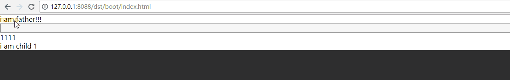- 父组件中判断haschild2是否为true，是则显示child2组件的内容，否则不显示
- attach方法在dom元素构建完成后自动执行，延时3秒后将hasChild2的值修改为true
14. ChangeSon-定时改变子组件示例¶
<div style="background-color: white">
i am father
<examples-widget-22_repaint_child_wgt_change-child1></examples-widget-22_repaint_child_wgt_change-child1>
<widget w-tag={{it.childName}}></widget>
</div>
export class Father extends Widget {
public props: Props;
constructor() {
super();
this.props = {
childName: 'examples-widget-22_repaint_child_wgt_change-child2'
};
}
public attach() {
setTimeout(() => {
this.props.childName = 'examples-widget-22_repaint_child_wgt_change-child3';
this.paint();
}, 3000);
}
}
效果展示：
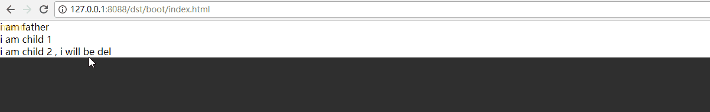- 父组件中将childName的值赋给widget元素的w-tag属性，导入子组件
- 在attach方法中延时修改childName的值，调用paint方法刷新页面，导入的子组件切换
15. ChangePage-定时修改页面内容示例¶
<div style="background-color: white">
{{for key, value of it.arr}}
<div>
id is : {{value[0]}}, name is : {{value[1]}}
</div>
{{end}}
</div>
export class List extends Widget {
public props: Props;
constructor() {
super();
this.props = {
arr: [
[100, 'a'],
[200, 'b'],
[300, 'c'],
[400, 'd'],
[500, 'e'],
[600, 'f'],
[700, 'g']
]
};
}
public attach() {
setTimeout(() => {
this.props.arr = [
[400, 'a'],
[600, 'b'],
[200, 'n'],
[900, 'c'],
[200, 'e'],
[100, 'z'],
[300, 'y']
];
this.paint();
}, 3000);
}
}
效果展示：
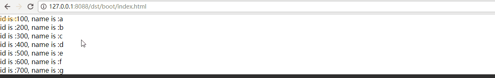- tpl文件中利用for循环动态创建出列表内容
- 在attach方法中修改列表内容，刷新页面修改内容展示
16. Scroller-滚动效果展示示例¶
<div w-plugin='{"mod":"widget/scroller/scroller", "options":{} }' style="display:block;" style="position:fixed;top:0px;bottom:0px;width:100%;">
<div>
<div style = "background-color:red">
<div style="height:500px;">1</div>
</div>
<div style = "background-color:blue">
<div style="height:600px;">2</div>
</div>
<div style = "background-color:green">
<div style="height:700px;">3</div>
</div>
<div style = "background-color:yellow">
<div style="height:800px;">4</div>
</div>
<div style = "background-color:grey">
<div style="height:500px;">5</div>
</div>
</div>
</div>
效果展示：
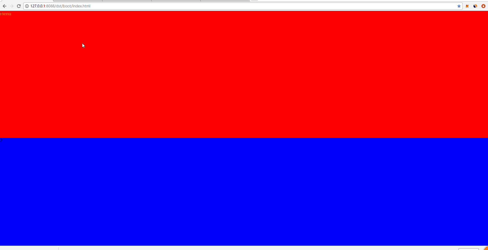- 用w-plugin引入scroll.ts滚动效果文件，即可实现上下滑动，手机模式下的触摸滑动
17. NestedScroll-嵌套滚动功能的展示用例¶
<div ev-scroller-scroll="scroll">
<div w-plugin='{"mod":"widget/scroller/scroller", "options":{"id":"outer", "bounce": false} }' style="display:block;background-color:orangered" style="position:fixed;height:500px;width:100%;overflow:hidden;">
<div style="height:600px;">
<div style = "height:200px;">商铺详细信息</div>
<div w-plugin='{"mod":"widget/scroller/scroller", "options":{"id":"inner", "bounce": false} }' style="display:block;" style="position:fixed;height:400px;width:100%;overflow:hidden;">
<div >
<div style = "background-color:red" on-tap="doTap">
<div style="border: 1px solid;height:500px">1</div>
</div>
<div style = "background-color:blue" on-longtap="doLongtap">
<div style="border: 1px solid;height:500px">2</div>
</div>
<div style = "background-color:green">
<div style="border: 1px solid;height:500px">3</div>
</div>
<div style = "background-color:yellow">
<div style="border: 1px solid;height:500px">4</div>
</div>
<div style = "background-color:grey">
<div style="border: 1px solid;height:500px">5</div>
</div>
</div>
</div>
</div>
</div>
</div>
export class Scroller extends Widget {
/* tslint:disable:typedef */
public inner = null;
public outer = null;
public outery = 0;
public innery = 0;
public scroll(event) {
console.log(`id is : ${event.id}, x is : ${event.x}, y is : ${event.y}`);
if (event.id === 'outer') {
this.outery = event.y;
this.outer = event.instance;
if (event.y === -100) {
this.outer.disable();
}
}
if (event.id === 'inner') {
this.inner = event.instance;
this.innery = event.y;
if (this.innery === 0) {
this.outer.enable();
}
}
}
public doTap() {
alert('tap');
}
public doLongtap() {
alert('longtap');
}
}
效果展示：
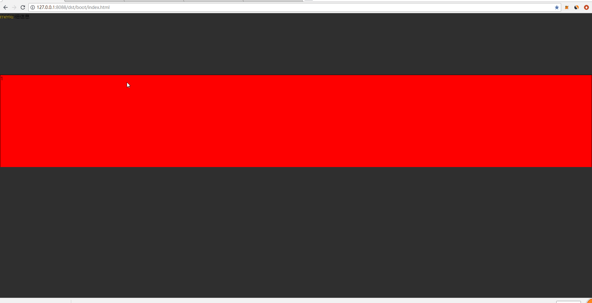- tap事件和longtap事件的绑定，tap事件类似于click事件，tap事件手机支持的效果更好，longtap事件长按触发
- 外层滚动被拖到最上面后，无法再继续拖动，
- 内层滚动被拖到最下面后，可以把外层滚动拖下来。
- 红色区域绑定on-tap事件，点击即会弹出“tap”
- 蓝色区域绑定on-longtap事件，长按会弹出“longtap”